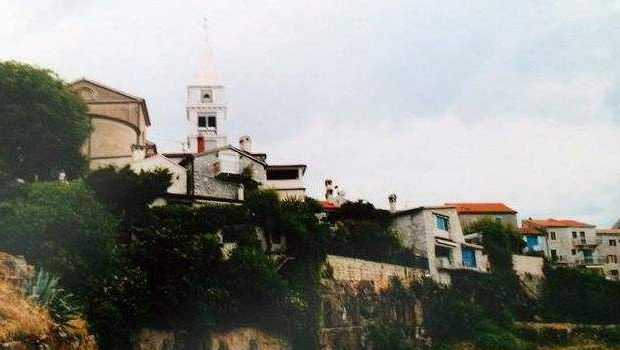

Atracțiile Istriei continentale - dealurile acoperite cu viță-de-vie și vestigiile romane:
Pe urmele lui Giacomo Casanova în magnificul orășel Vrsar, respectiv Ursaria de odinioară
Este cu adevărat surprinzător faptul că foarte puțini din cele câteva milioane de turiști care în fiecare an invadează litoralul istrian se îndreaptă și spre ținturile mai îndepărtate de țărm, pentru a vizita părțile continentale ale peninsulei, care, potrivit aprecierilor făcute de numeroșii experți în călătorii, seamănă foarte mult cu Toscana și Umbria. Datorită campaniilor de documentare pe teren efectuate în ultimii șase ani, am poposit în aceste zone de vis, bogate în monumente și vestigii. Am avut ocazia să le admir și să cunosc oamenii locului cu care am legat prietenii. Aici trăiesc, secole de-a rândul, românii noștri de demult - istroromânii, vlahii sau rumerii de astăzi.

Mergem la Pazin, la Muzeul Etnografic al Istriei. După ce am vernisat la Muzeul Orașului Rijeka expoziția de fotografii artistice "Bisericiile românești din Banatul sârbesc", inaugurată de consulul general al Serbiei în Croația, ni se propune să stabilim o colaborare și cu muzeul din Pazin. Este vorba de unicul muzeu din Croația care păstrează foarte multe obiecte etnografice și piese de port ale vlahilor istrieni, respectiv ale istroromânilor croați. Considerăm că este o inițiativă interesantă. O colaborare cu Institutul de Cultură al Românilor din Voivodina și cu Complexul Etnografic al Fundației de la Torac ar fi bine-venită, mai ales că această instituție derulează deja unele proiecte comune cu Muzeul Voivodinei din Novi Sad.
Orașul Pazin se află în mijlocul Peninsulei Istria, la vreo 40 km distanță de Rijeka și cam la aceeași depărtare de Poreč sau Rovinj. De Pola, capitala de facto a peninsulei, cea mai mare așezare urbană din Istria, îl despart aproximativ 60 km. După cel de-al Doilea Război Mondial, orașul Pazin, datorită meritelor de fortăreață a partizanilor din timpul luptelor, a fost proclamat sediul oficial al autorităților regionale istriene. Aici s-au făcut investiții importante în dezvoltarea industriei textile, a celei plastice, alimentare și, îndeosebi a industriei de construcții.
Pazin este amintit pentru prima oară în documentele istorice de împăratul Otto al II-lea, prin anii 983. În orașul de astăzi se păstrează rămășițele cetății din secolul al XIII-lea. Despre orașul vechi, cu castelul său sobru, situat la o înălțime de 100 de metri, legănându-se pe marginea unor cheiuri săpate în munte, se spune că l-ar fi inspirat pe Jules Verne când l-a aruncat pe protagonistul operei sale eponime, Matthias Sandor, în abis sau chiar pe Dante la scrierea Infernului.
Castelul din Pazin, respectiv cetatea Castrum Pisinum, datează din secolul al IX-lea, străjuind secole de-a rândul râul Fjoba și întreg ținutul. Este, cu adevărat impunător și auster, cu puternice ziduri de apărare care se leagănă parcă pe coama muntelui, deasupra unei prăpastii. Aici, între aceste ziduri reci și stăpânite de singurătate, funcționează, începând din anul 1962, Muzeul Etnografic al Istriei. În acest muzeu sunt expuse o seamă de obiecte etnografice ale celor care viețuiesc de secole de-a rândul în Istria, precum și o serie de costume de epocă din împrejurimi. Aici am avut ocazia să văd și să admir portul de altădată al istroromânilor din Ciciaria istriană, din Jeieni și șunievița, în care tot mai trăiesc urmași ai morlacilor de altădată. Între 7 500 de obiecte colecționate din satele istriene și expuse aici, muzeul păstrează și o colecție de suvenire și una de clopote, unele datând din secolul al XIV-lea. La parter sunt amenajate două ateliere tradiționale, unul de fierărie și celălalt de tâmplărie. La etaj, pe lângă expoziția permamentă, se află și câteva expoziții temporare. Unele pot fi văzute și în galeriile din aer liber ale muzeului. În curtea castelului se mai păstrează cisterna de apă potabilă, amenajată în eventualitatea unui asediu, pericol permanent în trecutul Pazinului.
În oraș vizităm câteva biserici vechi. Una dintre acestea este Biserica Sf. Nicolae, construită în anul 1266 în stil roman, cu un turn care i s-a adăugat abia spre sfârșitul secolului al XVIII-lea. În interior, frescele gotice, bogate, redau scene biblice și viața Sfântului Nicolae. Amintim și biserică franciscană, construită între anii 1463 și 1477. La vreo 5 km distanță de Pazin, în frumosul Beram, un sat cu trecut tumultos, se află încă o biserică veche care de asemenea merită toată atenția vizitatorilor. Este vorba de Biserica Sf. Maria, cu o serie de fresce medievale redând viața Mariei și ale mai multor sfinți. Frescele sunt realizate de cunoscutul pictor Vincent de Kastav. Într-una dintre aceste fresce sunt prezenți Adam și Eva, iar în alte două este redat Dansul morții.
Din fermecătorul Beram, drumul ne duce la Motovun, un orășel cocoțat în vârful unui bloc de stâncă, înalt de vreo trei sute de metri, țâșnind parcă din mijlocul viilor ce se întind pe valea râului Mirna. În trecut, aproape întreaga regiune era acoperită cu păduri, defrișate de venețieni. Merită să amintim și Vižinada, un sătuc în care se păstrează multe vestigii. La Vižinada puteți ajunge și pe unul dintre cele trei drumuri vechi ale vinului, care duc la cele mai importante podgorii și pivnițe (60 în total), unde pot fi gustate și cumpărate cele mai veritabile vinuri din regiune. Între cele mai căutate sunt Malvazija, un vin alb sec, și Teranul roșu, care se bea de obicei iarna, încălzit, cu zahăr, ulei de măsline și piper. Nu lipsesc din meniu nici trufele, respectiv tartufi, cum li se zice aici acestor ciuperici, preferate de aristocrații romani care le considerau afrodisiace.
Vrsar - orașul aventurierului Giacomo Casanova
Drumul din Rovinj către Poreč trece prin orășelul Vrsar, un mic port de iahturi și bărci, cu vile frumoase care se aliniază de-a lungul coastei și hoteluri de lux care urcă în terase pe munte, în vârful căruia este așezată o biserică și un turn cu clopote care domină împrejurimile. Toate străzile orașului vechi duc de la această biserică spre malul apei. Cândva, acesta era înconjurat de ziduri puternice înălțate de vechii romani, din care se mai păstrează doar apeductul și poarta de intrare, iar din perioada venețiană, Biserica Sf. Maria. În prezent, orașul are 1771 de locuitori, majoritatea croați și italieni, dar și patru români. De altfel, Vrsar este cunoscut și pentru faptul că aici a poposit, în toamna anului 1743 și în vara anului 1744, aventurierul Giacomo Casanova. Numele lui îl poartă astăzi una dintre străzile principale ale orașului în care tot se mai află casa parohială în care a locuit în timpul șederii lui la Vrsar.
Costa Roșu
October 11, 2014
© 2014 Libertatea